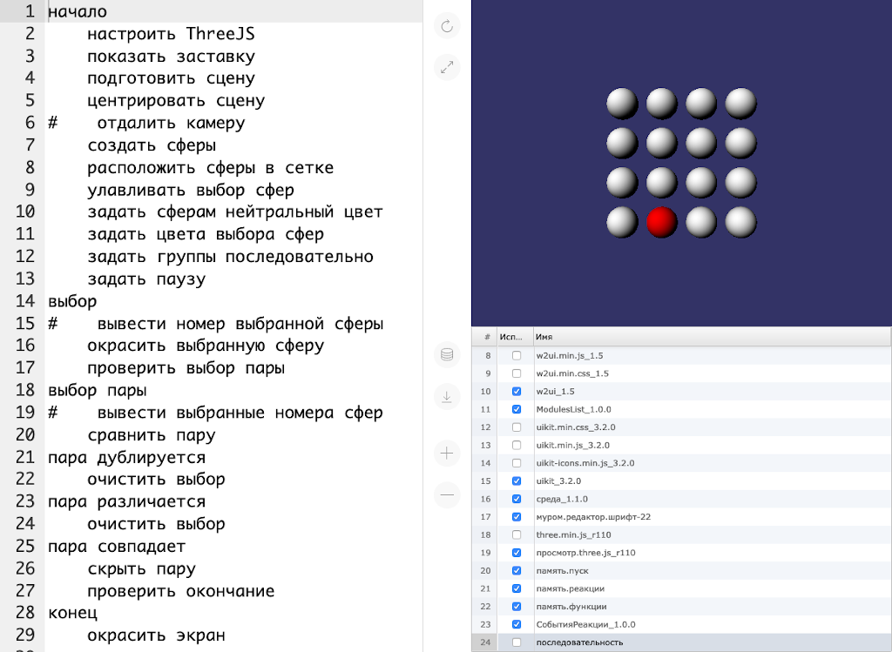

2023-12-25 00:00
В далёком 2005-м году проект Opensource Game Studio начался под названием Opensource RPG, т.к. целью было создание «первой открытой конкуретноспособной бесплатной игры». В чуть менее далёком 2011-м после выпуска OGS Mahjong 0.7 мы уже подсчитывали, что для создания РПГ в одиночку потребуется 540 лет.
В том 2011-м у нас теплилась надежда об увеличении команды, что могло бы уменьшить этот срок. Однако, сегодня в конце 2023-го очевидно, что создать РПГ в одиночку невозможно.. . .
2021-01-28 00:00

В этой статье Михаил поделится опытом создания доступных долговечных приложений.
В 2013 году компания Canonical пыталась собрать средства на выпуск смартфона Ubuntu Edge. Особенностью продукта должна была стать возможность преобразовывать смартфон в полноценный ПК. Увы, необходимую сумму собрать не удалось, поэтому мечта создать универсальное устройство так и осталась мечтой.
Со своей стороны я давно искал универсальность со стороны программного обеспечения, не железа. Сегодня с уверенностью могу сказать, что нашёл. . .
2020-05-03 00:00

В этой статье Михаил поделится опытом использования Git+JS.
Здравствуйте, господа, в этой статье я поделюсь опытом создания приложения учёта трат, в частности отвечу на следующие вопросы:
1. Зачем мне приложение учёта трат?
Как и многие другие люди я давно хотел стать богатым и практиковать успешный успех. Одной из рекомендаций в таких случаях часто выступает предложение вести собственный бюджет, чем я и занялся несколько лет назад. Скажу сразу, что ведение бюджета не сделало меня богатым и успешным, а своё материальное положение я улучшил обычным переездом в Москву.. . .
2020-02-12 00:00

В этой статье Михаил расскажет об обучении ребят программированию в 2019-м году.
Предисловие
Осенью 2019-го я в третий раз участвовал в курсе обучения ребят 10-15 лет программированию в качестве одного из преподавателей. Наши курсы проходили с середины сентября по середину декабря. Каждое занятие было в субботу с 10:00 до 12:00. Подробнее о структуре каждого урока и деталях создаваемой на курсе игры можно узнать из статьи за 2018-й год.
Лично для себя я выделил две основные цели, к которым иду с помощью курсов:. . .
2020-01-01 00:00

Любой, кто следит за нашим прогрессом достаточно долго, может сказать, что мы много раз перезапускали разработку с нуля.
Еще до выпуска "OGS Mahjong" мы несколько раз меняли технологии "под капотом". После релиза мы неоднократно делали это снова, отбрасывая уже готовые решения. Может показаться, что сейчас у нас меньше готового, чем перед выходом "OGS Mahjong". Это правда, но не совсем.
Когда вышел "OGS Mahjong", у нас была приятно выглядящая (на тот момент) игра с открытым исходным кодом, которая работала под Windows и Linux. С некоторой удачей и усилием в нее можно поиграть и сегодня, но уже не "из коробки".. . .
2019-08-05 00:00

В этой статье мы расскажем о нашем первом долговечном приложении для настольных ПК - генераторе статических сайтов ПСКОВ.
Долговечность
Под долговечным приложением мы понимаем такое приложение, которое работает без единого изменения на операционных системах, выпущенных в период 2010-2030 годов. Иными словами, долговечное приложение обладает 10-летней обратной совместимостью и 10-летней прочностью. Впрочем, ПСКОВ работает даже на Windows 2000, так что у него 19-летняя обратная совместимость.. . .
2019-04-16 00:00

В этой статье мы расскажем о начале усилий по защите себя от решений третьих сторон.
С первого дня существования проекта Opensource Game Studio мы используем решения третьих сторон для достижения своей цели по созданию лучших средств разработки игр. Мы использовали форумы, системы отслеживания задач, списки рассылок, социальные сети, системы контроля версий кода, хостинги, компиляторы, библиотеки и т.д.. Каждое решение третьих сторон имеет свой жизненный цикл.. . .
2019-02-04 00:00

В этой статье Михаил делится своим опытом обучения детей программированию.
Он расскажет о следующем:
Организация процесса обучения
Обучение проходит в рамках социальной ответственности бизнеса: компания предоставляет помещение с оборудованием, а также объединяет сотрудников, желающих попробовать себя в роли преподавателей, с сотрудниками, желающими обучить своих детей. Всё это исключительно на добровольной основе.. . .
2019-01-01 0:01

Этот год во-многом стал для нас годом переосмысления и определенности. Как некоторые из вас помнят, мы начинали этот проект, для создания среды для разработки игр. В течение многих лет идея развивалась от одной формы к другой, иногда изменения были значительными, в других случаях мы отбрасывали весь код и начинали заново.
В результате всех этих изменений мы подошли к концу 2018 года без готового инструмента, но с четким пониманием того, что за инструмент мы создаем.. . .
Страница 1 из 7